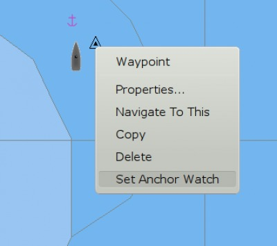
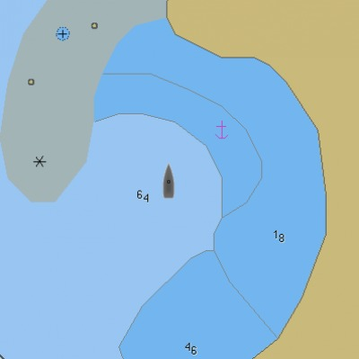
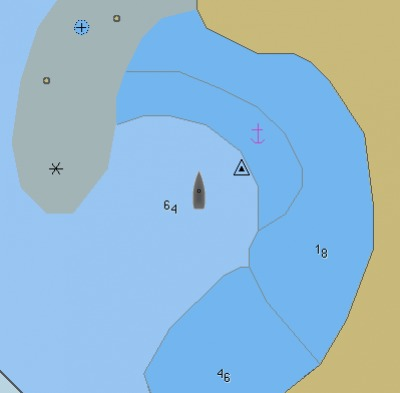
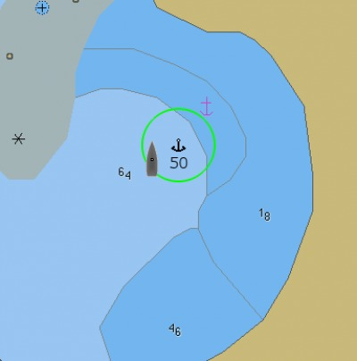
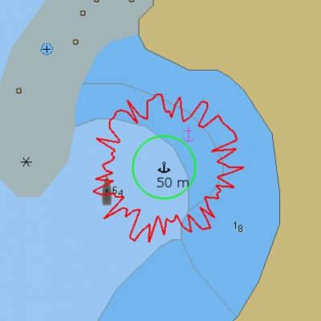
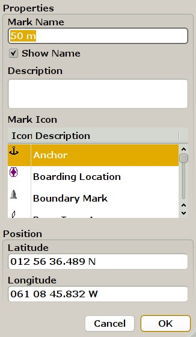
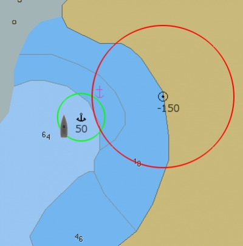
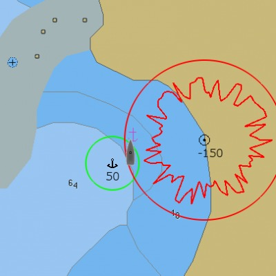
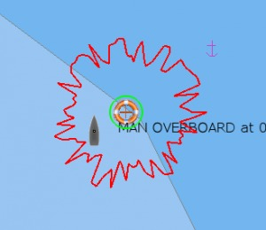

Anchor watch can be set on any mark that you have created with OpenCPN, except for a mark that belongs to a layer, as long as the boat is within 1 nautical mile of this mark. This means that the Anchor watch items, on the right click menu, will only be visible if your boat is within 1 nautical miles of a mark. If the boat is closer than 5 m to the mark the anchor watch can't be set either.
A maximum of two marks can have anchor watch set at the same time. Get around the restriction with a mark in a layer, by creating a new mark nearby.

This feature can be used in other situations than just anchoring, but keeping an eye on your anchor, and making sure it isn't dragging, is the main purpose.
Basic usage
To learn how it works let's make a dry run to a nice trade wind anchorage.

After circling around and exploring the bay, we know where we want to drop our anchor.
At the chosen spot we drop the anchor, at the same time we right click on the “Own Boat Icon” and press “drop Mark Here”.

The wind, ENE at 15 kts let us drift back until we are satisfied with our scope. A burst in reverse convinces us that the anchor is set, later confirmed by a leisurely snorkeling over the anchor. Time to sort out the anchor watch
Right click on the mark and press “Set Anchor Watch”. The name of the mark changes to 50, and a green circle appears with a radius of 50 meters.

The anchor watch is now active, with a default max distance of 50m from the mark, and an alarm will be set off if the boat for some reason exits the circle. If “Play sound on CPA/TCPA Alerts” is set in the AIS ToolBox Tab, the same audio alarm is activated together with the visual alarm on the screen. To deactivate the anchor watch, right click on the mark and select “Clear Anchor Watch”.
If you are more than 50 m from the anchor when activating the watch this happens..

Sort this out by open the Mark/WP Properties Dialog.

Change the name from “50 m” to a name that is relevant to the amount of chain and/or rode that you use, for example “75”. Change the icon to, if you like. Pressing OK should stop the alarm.
To get protection from the wind and a bit of northerly swell, we have really anchored to close to the beach. To keep an eye on this potential danger we set another mark on the beach.

This time we change the “Mark Name” to -150, this means that if the boat comes within 150 meters of this mark, the alarm is set off. Green circle, OK to be inside. Red circle OK to be outside.

An hour later, after a heavy squall passed, the wind goes light and fluky. The boat drifts towards the beach and the anchor alarm sounds and comes up on our computer screen.
The alarm sound is the same as the AIS warning sound and is set in the ToolBox under the AIS tab.
Alternatives and Settings
A mark at the position of ownship, can also be created by hitting “Enter” or “Spacebar”. “Ctrl + M” creates a mark at the position of the cursor. The anchor watch can now be set as demonstrated above with the default alarm distance being applied.
A way to easily drop a mark, exactly at your current position, is to hit “Ctrl + Space”. This is the “Man Over Board” shortcut. Right click and go to properties. Change the name to a suitable alarm distance and pick a different icon. Set the Anchor Watch.

The picture is an illustration to what happens if you use the MOB keystroke, and then just activate the Anchor Watch. As the mark is already named, the default watch distance doesn't work. The green circle is the 5 m default minimum distance. The alarm goes off, of course.
* The Anchor Watch only works with an active gps. If the gps signal is lost, the alarm will be set off. Both the default Anchor Watch Radius and Max distance from mark can be changed by editing the configuration file, opencpn.ini on Windows and opencpn.config on Linux.